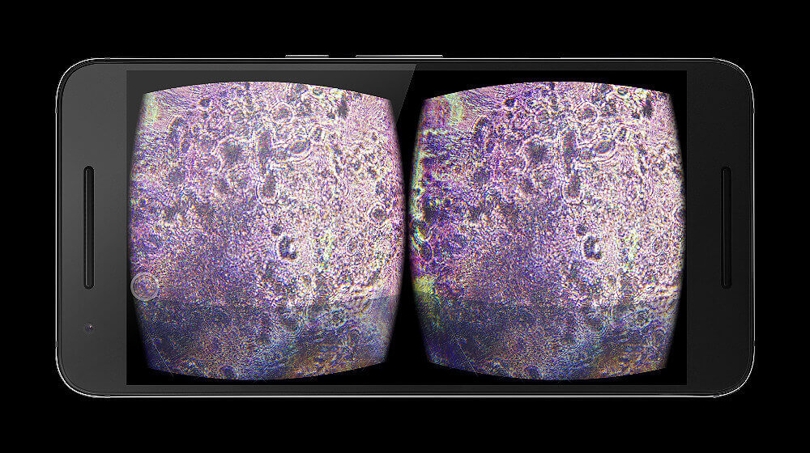
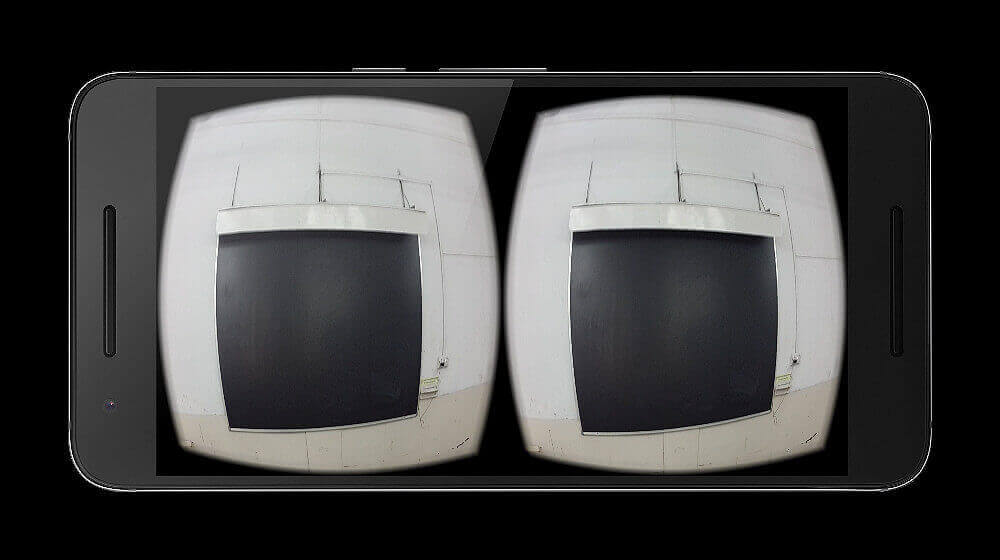

A VR Camera App
As part of the internship that I did at Srujana Center Of Innovation, Hyderabad in collaboration with MIT Media Labs, StereoCam was built as a part of a research project we were working on as a solution to get better vision for the partial blind people. The idea was to create a Virtual reality application which would run on a smartphone embedded within a VR headset. StereoCam offers stereoscopic camera views with a filter of fish-eye lens which helps the user to see distant objects closely. StereoCam was built using the Google Cardboard SDK that enabled me to display 3D stereoscopic scenes with binocular rendering.
Experiments Performed
An experiment was performed with StereoCam to see whether a plant cell can be seen in stereoscopic views to observe it in detail. For performing this experiment we were provided with Foldscopes from the research team at PrakashLab at Stanford University, California. A foldscope was attached to the camera module of the smartphone and the StereoCam app was launched. When viewed through a VR headset under a light source the results obtained were insightful. This small experiment proved that VR applications can have meaningful possibilities in the health sector not just for the partial blind but also at a microbiological and botanical level.
Stereocam Screenshots

